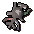

")
Runecrafting - Extra Features
Training Hints and Tips | Summoning Familiars | Runecrafting Gloves | The Runecrafting Guild | Dungeoneering | Quests
Training Hints and Tips
- Wear the Boots of Lightness and a spotted/spottier cape while Runecrafting. These reduce your weight and allow you to run for longer periods of time.
- When mining essence, wear as little as possible. This will keep your weight to a minimum, allowing you to run longer.
- Use pouches if you have them. They allow you to carry more essence per trip and will save you time in the long run.
- Use teleporting jewellery to get closer to altars. The ring of duelling will get you close to the fire altar while the amulet of glory will take you close to the entrance of the Abyss.
Summoning Familiars
Using the Summoning skill, you'll find that there are a few familiars that might be useful for training your Runecrafting. Of particular note is the abyssal lurker, who can carry seven essence for you, which all adds up!
Also, any aspiring wizards who have completed the Rune Mechanics quest will be rewarded with a rune guardian pet. This logical and loveable animated lump of rune essence doesn't eat food like other pets. Rather, it can be sustained by taking it to any of the rune altars, where it will energise itself. It will also change colour to reflect the last altar it fed on (excluding Ourania Altar). If you'd like more than one rune guardian pet, you can leave your current one in your house's menagerie then go and talk to Clerval for a new grey rune guardian pet. Finally, if you take a set of infinity robes and your rune guardian to one of the elemental altars - air, water, earth or fire - you can use those robes (hat, top and bottom, but not gloves and boots) on the altar to change their colour too. To change them back, simply use them on your rune guardian.
Runecrafting Gloves
There are three sets of gloves available from Fist of Guthix that anyone interested in Runecrafting should look to purchase. Air, earth and water Runecrafting gloves give double the normal experience when you are crafting runes of the same type as your gloves. The gloves will crumble to dust after you have used 1,000 essence in this way.
You need a Runecrafting level of 10 to wear air Runecrafting gloves, 20 to wear water Runecrafting gloves, and 30 to wear earth Runecrafting gloves.
The Runecrafting Guild
The Runecrafting Guild, being a place of research and filled with the wonders of magical experimentations, holds more than just the two recruiting scientists in charge of the Great Orb Project. Within its walls you will also find that the mages have been very busy indeed...
The Omni-Talisman (Members Only)
 The omni-talisman is a remarkable object created by Elriss to enable the devoted runecrafter to access almost every altar freely. If you are able to show her a talisman for each of the Runecrafting altars that require them (so there's no need to find a talisman for the Ourania Altar, for instance), she will grant you a hefty chunk of Runecrafting experience for each, as well as the omni-talisman.To craft an omni-talisman into a tiara or staff, take it to Wizard Korvak, who can be found staggering about in the Runecrafting Guild, jumping at shadows and being generally terrified of everything.
Wizard Korvak (Members Only)
In addition to helping you convert the omni-talisman into tiaras and staves, Korvak will also replace a lost medium abyssal pouch and repair any other pouches you have - of course, his experiences have cost him his sanity, so expect to have to pay for his services.The Rune Altar Map
Dominating the Runecrafting Guild you will doubtless notice a massive map of RuneScape. This is no ordinary map, of course - mages would never leave something so impressive alone - and can be used to locate the mysterious ruins that hide Runecrafting altars. To locate an altar, simply use a talisman on it and it will highlight it for you, along with a short description to help you find your way.
Runecrafting Training in Dungeoneering
It is possible to train all of your skills while dungeoneering, and Runecrafting is no exception. Monsters will drop essence, which can be taken to the altars in Daemonheim and converted to your choice of rune. You can also gain Runecrafting experience by completing runecrafting skill doors.
- To find out more about skill doors and the basics of dungeoneering, please click here
- To find out about runecrafting in Daemonheim, click here
- To find tables with Runecrafting requirements and XP levels, click here
Quests Giving Runecrafting Experience
To view quests that reward you with Runecrafting experience please see the Runecrafting Rewards page.
Click here to view the Runecrafting FAQs

More articles in
Runecrafting
|
|
|
Further Help
If this article does not help you, you may find the following sections of the RuneScape site helpful:
|
|